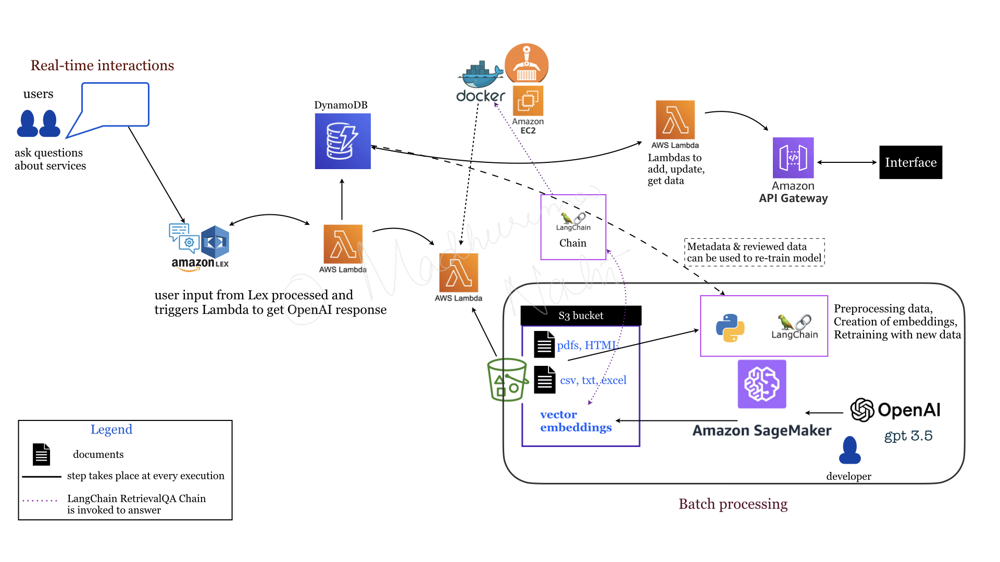

A leading equipment rental firm chose to build
a GenAI knowledge-based chatbot as their
inaugural digital innovation initiative.
This tool would leverage custom client data
in order to assist sales representatives
respond to customer inquiries quicker,
serve as an internal training hub and
replace manual document searches.
In addition, internal SMEs (subject matters experts)
needed the ability to review and update
any response that was flagged by the end users
as an incorrect or incomplete.
I worked with a cloud engineer to deploy
this chatbot using OpenAI on AWS platform,
and implemented a RAG (Retrieval-Augmented Generation)
approach.
To understand their domain and provide relevant
answers from their data, various documents (both
structured - csv, json
and unstructured - pdf, html) were
ingested into S3 bucket
to create a knowledge base.
Employing RAG architecture was essential to augment
the OpenAI LLM model and
provide accurate responses.
Chroma vectorstore was used
to store the embeddings.
Multiple Lambda functions were assigned
to handle different parts of the solution, i.e.,
processing input, returning OpenAI response,
updating database with feedback from SMEs etc.
Lex was the backbone of the solution,
providing all NLP and NLU capabilities to understand
user questions and determine best possible answers.
Note: There was a front-end developer who was
responsible for the user interface.
Solution architecture

OpenAI Lambda to get response.
LangChain RetrievalQA Chain
was implemented to answer user query in a
conversational manner.
The prompt template was designed as per
the requirements from the clinets, e.g.,
answers formatted into a list
wherever possible (and when requested by the user),
provide hyperlinks to resources referenced
in the answers, etc.
Sagemaker was used to
preprocess all the documents used for RAG approach,
stored in S3 bucket.
Data from DynamoDB was also
analyzed and used to generate embeddings using
gpt3.5 model.
LangChain dependencies were
deployed by a Docker image
through ECR (Elastic Container Registry)
hosted on the EC2 instance and
used by a Lambda function to
connect responses to Lex.
API Gateway and Lambda
functions.
DynamoDB.